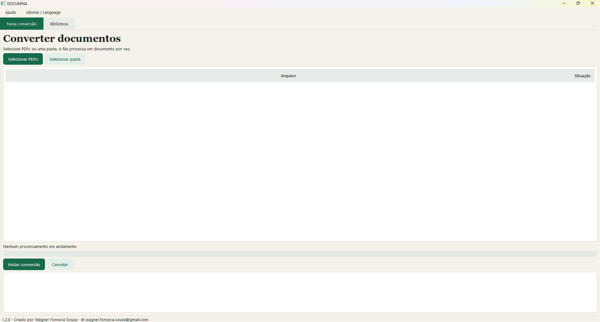

01
Converta uma vez.
Use onde quiser.
Gere Markdown, Word, JSON e texto simples ao mesmo tempo, preservando também o PDF original.
.md.docx.json.txt
Transforme PDFs em conteúdo organizado e pronto para pessoas e inteligências artificiais — sem enviar seus arquivos para a nuvem.
O Documina extrai, estrutura e organiza seu conteúdo para pesquisa, edição, automação e treinamento de IA.
Gere Markdown, Word, JSON e texto simples ao mesmo tempo, preservando também o PDF original.
O processamento acontece no seu computador. Documentos e caminhos locais não são enviados.
Renomeie documentos, gerencie arquivos associados e exporte seu catálogo em CSV ou JSON.
Interface direta, acompanhamento em tempo real e todos os formatos organizados em uma biblioteca local.

Selecione PDFs ou uma pasta inteira para iniciar.
Selecione um ou vários documentos e adicione à fila.
Extração, estruturação e OCR acontecem localmente.
Baixe, edite, pesquise ou prepare para sua IA.
Ideal para pesquisas acadêmicas, documentos jurídicos, relatórios empresariais e qualquer conteúdo que merece permanecer privado.
Transforme documentos parados em conhecimento vivo, organizado e pronto para o próximo passo.
Baixar Documina 64 bits ↓